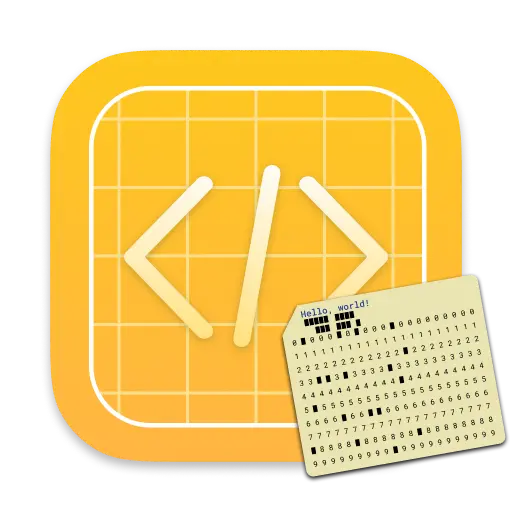
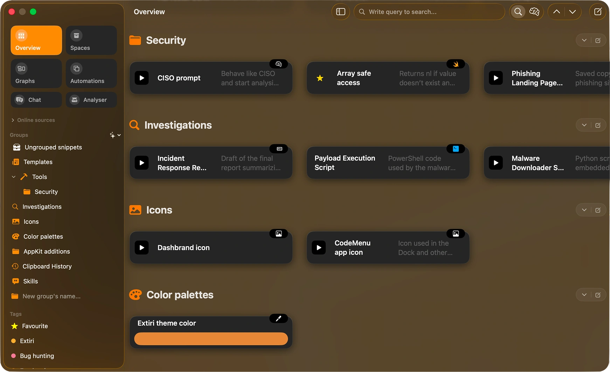
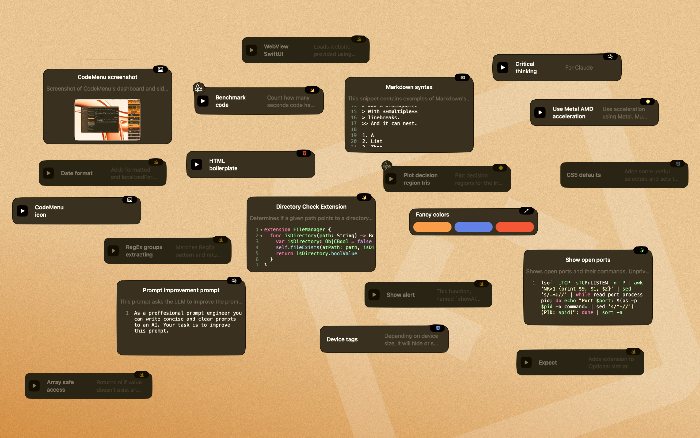
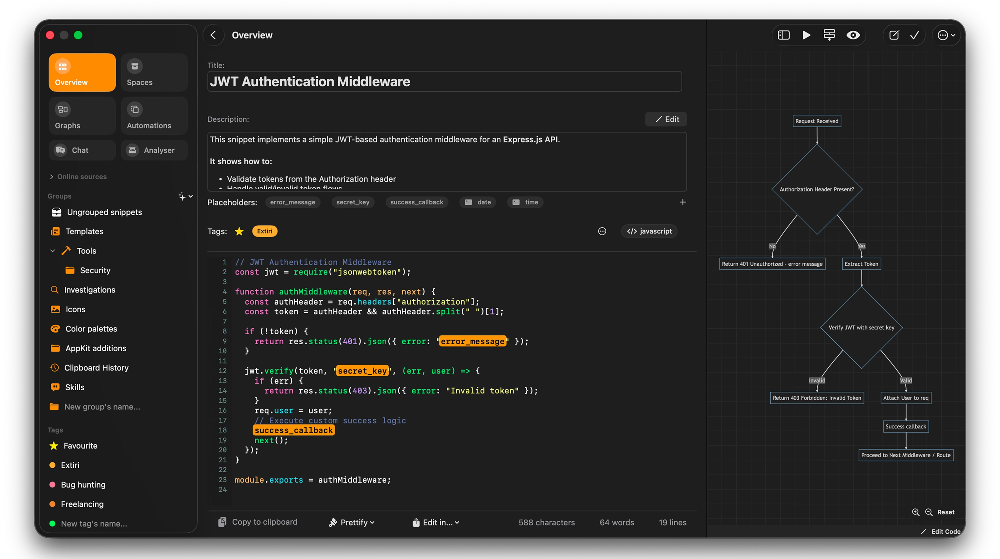
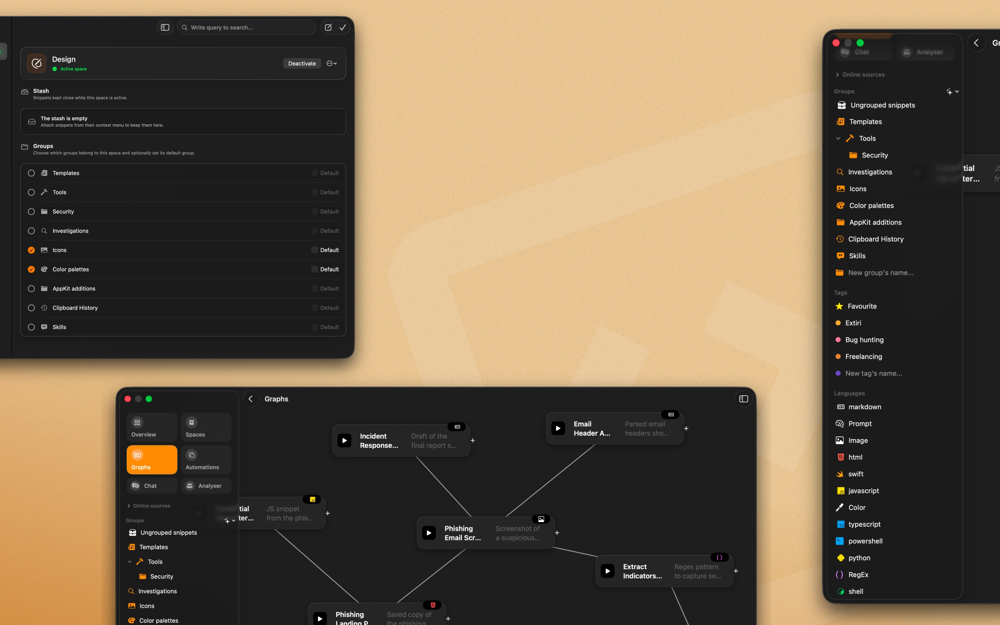
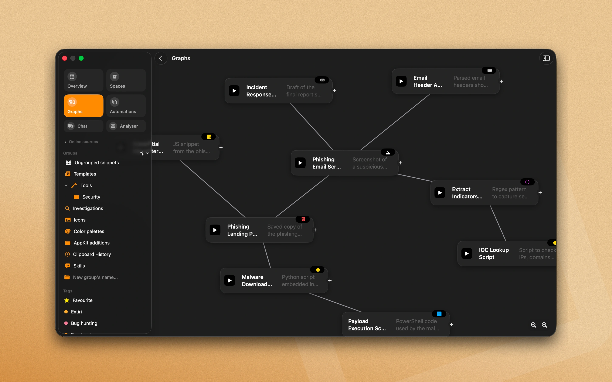
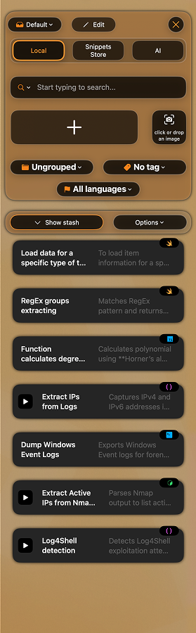
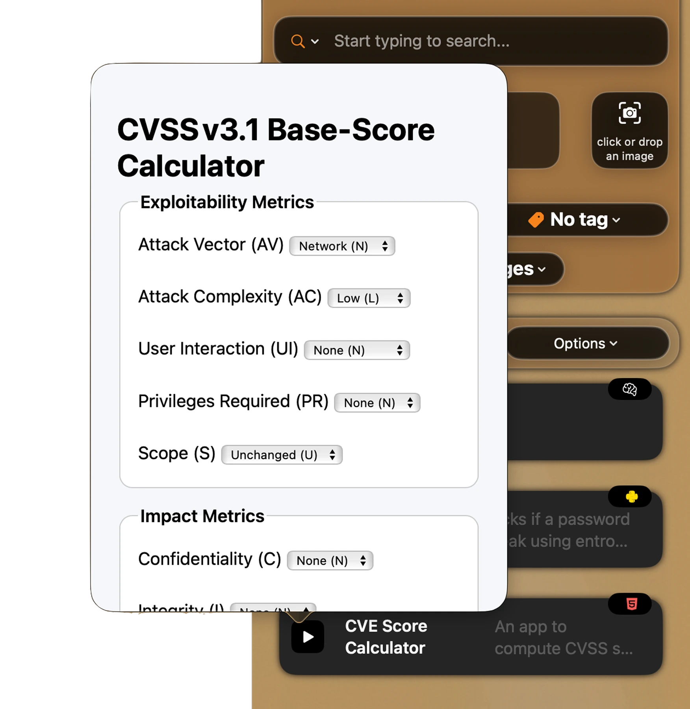
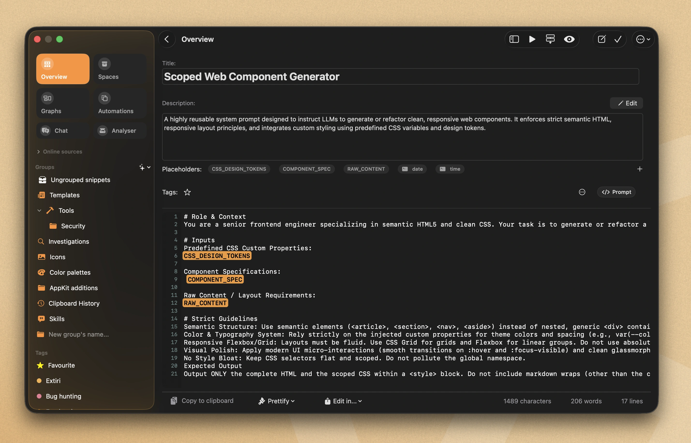
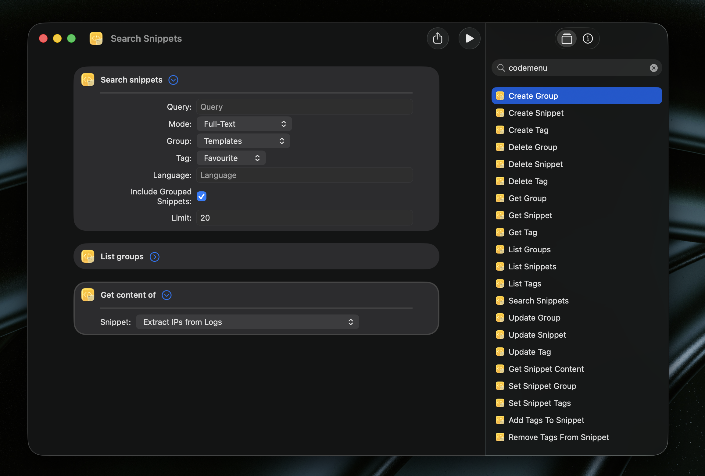

CodeMenuKeep the work you’ll reach for again.
Save the code, prompts, and research behind your projects. Find them by meaning, pull them into your editor, and make them ready to reuse.

Build a library of more than code.
Save code, prompts, plain text, color palettes, and images as snippets. CodeMenu highlights code in 61 languages.

Explain what the snippet does.
Add Markdown documentation to a snippet, use LaTeX for formulas, and draw flow diagrams to show how the logic fits together.

Organize the work. Follow its connections.
Use Spaces for the project at hand, Stashes for work in progress, and groups and tags across the library. Link a migration script to its notes and trace that relationship in the graph.


Keep your library beside your editor.
Reach for the Side Window while you work. If you only remember what a snippet did, describe it in semantic search.
§§ In a supported editor, type this to look up snippets with the Suggestions companion.
Get Suggestions
Run what you’ve saved.
JavaScript runs out of the box. Run snippets in almost any other language once you add its interpreter. You can also run saved prompts and interact with HTML previews inside CodeMenu.

Write it once. Fill in the details next time.
Basic placeholders insert the text you enter. Automatic placeholders fill in the current date, the current time, or the output of a shell command.

Try basic placeholders
Review the {{component}} in {{framework}}.
Review the settings form in SwiftUI. Check keyboard navigation, error states, and accessibility labels.
Put your best examples in your tools.
Use your own snippets as context for an assistant, or build scripts around the library you already maintain.
- MCP server
- Let compatible assistants look up your verified code and project notes. You can also chat with snippets in CodeMenu.
- Command line
- Find snippets from your terminal with
cdmn, or query the local HTTP API from another tool. - JavaScript automations
- Run a JavaScript automation from the context menu for a single snippet or a selection of snippets.
- macOS Shortcuts
- Create, search, update, and organize snippets with Shortcuts actions.
Your library lives on your Mac.
Work offline, encrypt sensitive snippets, and turn on iCloud sync if you want your library on your other devices.
Extract text from screenshots, turn code into shareable images, publish selected snippets as GitHub Gists, or host a Snippets Store.
Watch the CodeMenu walkthroughBuild a library you’ll keep using.
More screenshots from CodeMenu



Common questions
What is a code snippet manager?
A code snippet manager is a tool that allows developers to save, organize, and quickly retrieve reusable blocks of code. CodeMenu goes beyond this by also acting as a developer knowledge base for storing documentation, API examples, and visual assets.
How do developers organize snippets?
Developers typically organize snippets using tags, folders (Spaces), and sometimes visual graphs to link related items. With CodeMenu, you can categorize your reusable shell commands, SQL queries, and project architecture notes to keep your workspace clutter-free.
Can I store AI prompts?
Yes. CodeMenu acts as an AI prompt manager, letting you store, version, and organize system templates or complex instructions for LLMs, replacing scattered text files.
Can I search by meaning instead of keywords?
Yes, CodeMenu features semantic search, allowing you to find snippets and notes based on the intent of your query even if you don't remember the exact function name or syntax.
Can AI assistants read my snippets?
Yes. Using the built-in MCP server, you can give AI assistants like Claude or Cursor secure access to read your personal knowledge base, grounding their answers in your verified code.
Does CodeMenu support iCloud sync?
Yes, it does. You can sync your snippets and some settings across your devices using iCloud by enabling it in the settings.
Which models do integrated AI features support?
CodeMenu supports two types of models for the AI chat and generation features. First is builtin which allows you to use Mistral 7B and Gemma 2 2B. Second is Ollama app. If you download Ollama you can then connect CodeMenu to it and use any model available through it.
Where is my data stored?
CodeMenu is offline-first and privacy-focused. Your code never leaves your machine unless you explicitly choose to share it.
What is the HTTP server for?
The built-in HTTP server provides a local API for your other tools to access your library. It is not for public sharing. Use it to fetch snippets via scripts, integrate with Raycast/Alfred, or build custom workflows that need access to your knowledge base.
Can I use it with AI?
Yes. CodeMenu is designed to be the context layer for your AI. Use the MCP server to let Claude or other agents query your library, or use the local semantic search to find relevant context to paste into your LLM.
Is there a free trial?
Yes, there is a 14-day free trial available on the Mac App Store. You can choose between a one-time purchase or a subscription.
Start with something you’ve already written.
Save a snippet you use often. Add what you’ll need to remember next time, then try finding it from your editor.
Try CodeMenu free